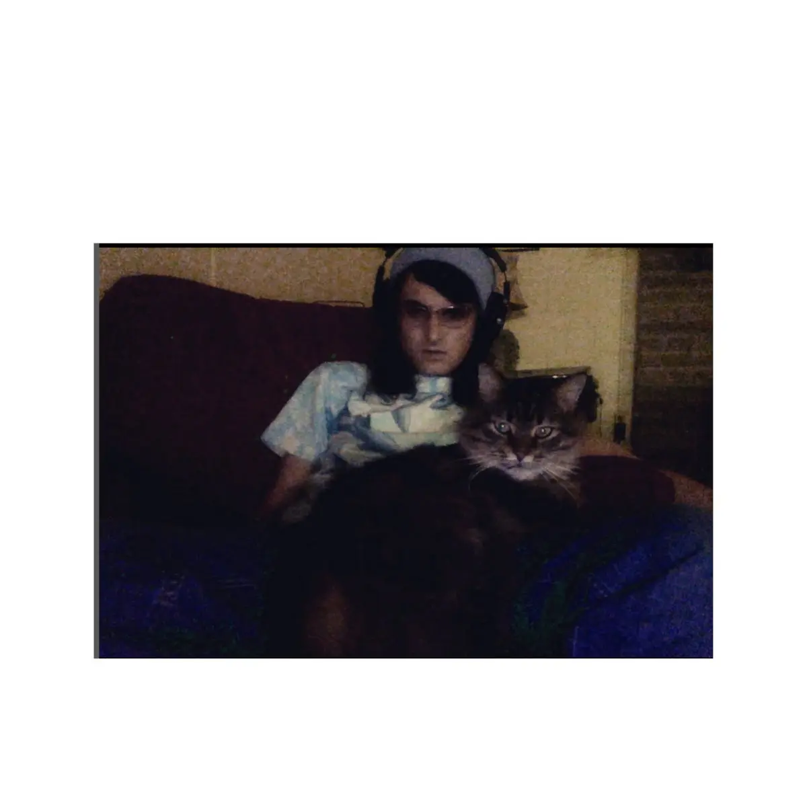

Evelyn Luvtell ~ 3 Days War
Catalog number: BM2CM
Date released: 2025.09.16
Tracks: 25
Total runtime: 2:31:20
Released on: Digital, 2x Cassette
Total copies: 6 [5 remaining]
Pricing: £0 Digital; £12 Cassette
Artist links: [Bandcamp] [RateYourMusic] [Discogs]
Album links: [Bandcamp] [Discogs]
Gallery


{kind=link}
Description
New cassette re-release of 3 Days War by Evelyn Luvtell, featuring one bonus track!
One of the most unique albums I've heard in a long time, 3 Days War is a 2.5 hour long album which spans quite a few genres, but focuses on witch folk and other experimental genres, such as musique concrète, sound collage and noise! Definitely one of my favourite albums of the year so far...
If you like this album or would like to support Evelyn more directly, please check out evelynluvtell.bandcamp.com or soundcloud.com/evelynluvtell for much more of her own music, thank you very much!
Physical description
2 recycled c90 tapes in a cassette audiobook case, comes with high quality 4 panel J card, and download codes.
Limited to 6 copies, blank cassette for scale
Many thanks to Evelyn for working with BMCM to produce this cassette! You can find much more of Evelyn's music at evelynluvtell.bandcamp.com/music/ and soundcloud.com/evelynluvtell